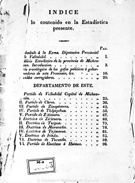

Referencias
- Guevara, F.R. 2002. Los últimos años de la historia natural y los primeros días de la biología en México. Cuadernos del Instituto de Biología 35. Instituto de Biología UNAM. 212 p.
- Tavera, A.X. 1979. Juan José Martínez de Lejarza: un estudio de luz y sombra. INAH, Centro Regional México-Michoacán. México. 86 p.
- Urbina, L.G.,P. Henríquez y N. Rangel. 1985. Antología del Centenario: Estudio documentado de la literatura mexicana durante el primer siglo de independencia (1800-1821). Primera Parte II. Universidad Nacional Autónoma de México. 793 p.
Juan José Martínez Lejarza
1785 – 1824
Juan José Martínez de Lejarza y Alday fue un naturalista del México independiente que continuó con las investigaciones sobre la naturaleza iniciadas en el tiempo de la colonia. Nació en 1785 en Michoacán y murió en ese estado en 1824.
Realizó sus estudios primarios en el Colegio de San Nicolás Obispo de Morelia. Más tarde se trasladó a la ciudad de México para continuar su formación en el Colegio de Minería, ahí cursó física, matemáticas, topografía y se destacó en las ciencias naturales.
Posteriormente regresó a su tierra, donde se desempeñó en la milicia y ocupó varios cargos en la política como regidor y diputado del estado. Fue autor del primer análisis estadístico publicado en esa época, documento en el cual ya se incluye información sobre el total de la población de la entidad, dividida por sexos y estado civil, así como los bienes de las comunidades.
Como botánico se interesó en explorar Michoacán y sus alrededores, de manera que en pocos años acumuló considerable información sobre la flora del estado. Tuvo un gusto particular por las orquídeas, de las cuales se hizo especialista, incluso propuso una clasificación de estas plantas basándose en las semillas y el polen.
Su obra Novorum Vegetabilium Descriptiones, se publicó después de su muerte, es el primer estudio sistemático de orquídeas y de otros vegetales de Michoacán. Un año después, se publicó la segunda parte de su obra que incluye aportaciones del naturalista Pablo de la Llave, como las descripciones de cien especies de plantas, varias desconocidas hasta entonces.
Aunque la literatura no fue su principal quehacer, también escribió poesía. Esta obra se reunió y publicó después de su muerte en 1827, en un tomo titulado “Poesías”.
Mis favoritos
- Orquídeas de Michoacán
- Vainilla (Vainilla planifolia)
Foto: Iván Montes de Oca / Banco de imágenes, CONABIO
Mis lugares
Mis ideas
- 
- Análisis estadístico de la provincia de Michoacan en 1822
Fuente: Biblioteca digital del Patrimonio Iberoamericano